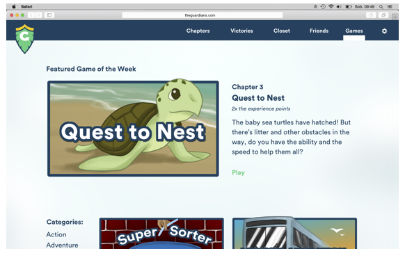
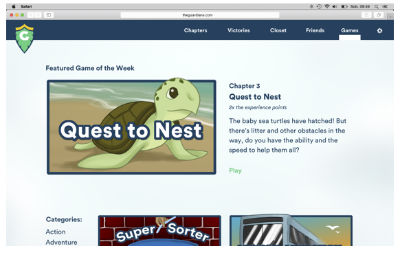

The Guardians
An interactive webcomic that teaches children (9 years old and up) about climate change.
An interactive webcomic that teaches children (9 years old and up) about climate change.
There seems to be very few children engaging in a conversation about the atmospheric transformations occurring on our planet. Doesn’t it seem odd that the generation who will be most affected by the changes in our climate also happen to be the generation who is least engaged in the discussion?
I had to learn about the impact of global warming the hard way. As a Portuguese American, I am often flying out of the United States of America to visit my family in Açores. The islands of Açores are far off the coast from Portugal, residing in the Atlantic ocean.
It’s a beautiful milk climate, thus the temperature is warm year-round. The lowest temperature reaches 55 degrees Fahrenheit, while the highest temperature reaches around 90 degrees Fahrenheit, but the humidity is often at a high percentage of 70% to 90%, which makes the days feel much hotter than just 90 degrees.
In 2013, I was 17 years old when I flew to the islands to visit family. I noticed it was considerably colder than I had expected. The summer temperature that rises to the 90’s range was actually closer to the 70’s this time around.
At first, I assumed it was just that one day, and the remaining days to come would warm up. But the colder temperatures continued and I was starting to question my own knowledge of the island’s climate. Several months later, it snowed for the first time in Açores. The villagers of these islands had never seen snow in person. They had no idea what to do. Clueless, they were shocked to learn that this white, soft substance was cold as ice.
Another month later, a severe storm struck the island. Nobody was quite sure what to call the storm. It was a concoction of a hurricane and a tsunami. Houses were destroyed. Streets were flooded. Worst of all, my family was hurt. They were not prepared for an experience like this. I was heartbroken to learn that the island was experiencing such dramatic changes. I was terrified to learn that my grandparents were struggling to fight this change in climate…
The answer lies in change blindness. Change blindness, according to the dictionary, is defined as “a perceptual phenomenon that occurs when an alteration in a visual stimulus is introduced and the observer doesn't notice it.”
Essentially, this means that the effects of climate change are too minuscule or too slow for us to notice how grand of a problem it is.
Our sea levels are rising and our glaciers are melting, but it’s happening at a pace that seems much too slow for us to really understand the gravity of the issue. In addition, we don’t see these occurrences in person. There are very few people who can say that they lost their homes because a glacier melted. However, we can say that the rising sea levels are becoming an immediate danger when a hurricane or a tsunami strikes.
I never went forth to answer this question until recently when I had the opportunity to absorb myself into the research about climate change. Diving into this research further inspired me to dedicate my thesis project on my complicated relationship with climate change.
The next steps can be viewed here